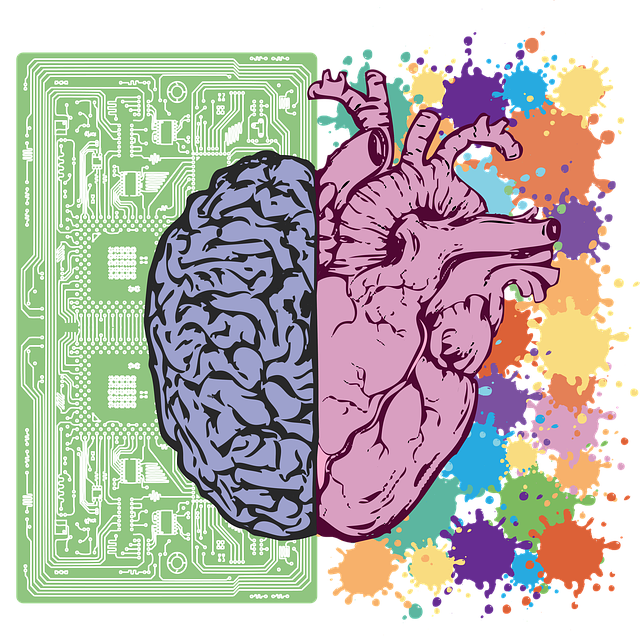

<mat-sidenav-container hasBackdrop="false">
  <mat-sidenav #sidenav opened="true" mode="over">
     <br/>
    <mat-nav-list>
        <a  mat-list-item [routerLink]="'/dashboard'"  routerLinkActive="router-link-active" >
          <mat-icon>dashboard</mat-icon>
          <span class="link-text"> Dashboard  </span>
        </a>
        <a  mat-list-item [routerLink]="'/concepts'"  routerLinkActive="router-link-active" >
          <mat-icon>psychology</mat-icon>
          <span class="link-text"> Concepts  </span>
        </a>
        <a  (click)="logout()" mat-list-item class="logout">
          <mat-icon>logout</mat-icon>
          <span class="link-text"> Logout  </span>
        </a>
    </mat-nav-list>
    <div class="background"></div>
    <div class="background-cover"></div>
  </mat-sidenav>

  <mat-sidenav-content>
    <div class="content">
      <ng-content></ng-content>
    </div>
  </mat-sidenav-content>
 
</mat-sidenav-container> 